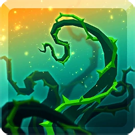

COMO MONTAR SEU DECK DE PLAGUE
Carta Principal (Aflição) + 1 Apoio + 1 Suporte
−

Thriving Plague
1 a 3 Partes
Obrigatória. Espalha praga infecciosa contínua. Focar em poucos alvos.

Sands of Time
Padrão / Melhor Geral
Acelera e prolonga a frequência e os ticks de dano da aflição.

Ravenous Swarm
Excelente Uso Geral
Enxame contínuo. Aplicação ágil e muito estável de aflição nas partes focadas.

Blazing Inferno
Só Buff de Dano
Substituto caso Swarm esteja em outro deck. Usar estritamente com buff de dano de aflição.

Amplify
Potencializa Aflição
Amplifica diretamente a força das aflições ativas no alvo.

Insanity Void
Contra Corpo
Bônus massivo de aflição concentrado em partes sem armadura.

Skeletal Smash
Contra Armadura
Suporte de ativação focada para perfurar armaduras resistentes.

Battle Drums
Neutro / Qualquer Parte
Tambores de guerra que aumentam o ritmo de ataque e amplificam o dano geral.
Regras Táticas do Deck de Plague:
• Foco: Bater estritamente em 1 a 3 partes para não espalhar o dano em excesso.• Apoio de Aflição: Sands of Time é o padrão de aceleração; Ravenous Swarm é a melhor escolha geral de consistência.
• Quando usar Inferno: Blazing Inferno entra como substituta caso Ravenous seja usada em outro deck, mas estritamente com buff de dano de aflição.
• Suporte: Escolha Void para foco no corpo, Smash contra armadura, ou Drums como suporte neutro universal.
COMO MONTAR SEU DECK DE FOGUETES
Carta Principal (Explosão) + 1 Apoio + 1 Suporte
−

Clanship Barrage
Qualquer Parte
Obrigatória. Dispara foguetes pesados do navio. Usar com Explosão e Suporte.

Mirror Force
Uso Geral / Qualquer Parte
Ganha bônus de dano progressivo a cada ciclo de raid em que for usada.

Barbed Morningstar
Corpo ou Armadura
Bater no corpo com 5 armaduras ativas, ou na armadura com 5 partes vivas sem armadura.

Fragmentize
Armadura Amaldiçoada
Dano aumentado contra partes protegidas por armadura e maldições.

Flak Shot
Armadura c/ Peças Expostas
Disparos de estilhaços espalhados por múltiplos alvos protegidos por armadura.

Guard Break
Foco Direto
Potencializa o dano direto na parte atacada quando há partes destruídas.
Guard Break
Foco Direto
Potencializa o dano direto na parte atacada quando há partes destruídas.

Ancestral Favor
Todo o Titã
Buff global que eleva a chance e o poder de ativação dos golpes de explosão.
Regras Táticas do Deck de Foguetes:
• Sinergia: Clanship Barrage precisa ser combinado com 1 carta de Apoio e 1 Suporte.• Apoio: Mirror Force é ideal para uso geral; use Frag ou Flak contra armaduras.
• Uso de Guard Break: Se usado como apoio na 2ª coluna, combine estritamente com Ancestral Favor.
• RESTRIÇÃO CRÍTICA: Não use Flak Shot acompanhado de Guard Break!
COMO MONTAR SEU DECK DE PURIFY
Carta Principal (Explosão) + 1 Apoio (Aflição) + 1 Suporte
−

Purifying Blast
2 ou 3 Partes
Obrigatória. Detona os acúmulos de aflição ativos. Usar com Aflição e Suporte.
Ravenous Swarm
Raids de Explosão
Enxame voraz. Aplica aflições rápidas para carregar a detonação de Purify.
Amplify
Raids de Explosão
Amplifica o dano e a frequência das aflições base.

Radiant Kaleidoscope
Híbrido Geral
Suporte excelente para potencializar decks de Explosão combinados com Aflição.
Battle Drums
Neutro / Qualquer Parte
Tambores de guerra que aumentam o ritmo de ataque e amplificam o dano geral.
Insanity Void
Contra Corpo
Bônus massivo para detonar acúmulos de aflição diretamente no corpo do Titã.
Skeletal Smash
Contra Armadura
Suporte focado em quebrar armadura para abrir caminho para os ataques de Purify.
Regras Táticas do Deck de Purify:
• Mecânica: Purifying Blast requer cartas de Aflição ativas no alvo para causar dano real. Bater em 2 ou 3 partes.• Apoio: Use Ravenous Swarm ou Amplify para acelerar e maximizar os acúmulos de aflição.
• Suporte: Escolha Void para foco no corpo, Smash contra armadura, ou Radiant/Drums para amplificação universal.
COMO MONTAR SEU DECK DE AMPULHETA
Carta Principal (Suporte/Tempo) + 1 Apoio (Aflição) + 1 Suporte
−
Sands of Time
Aceleração de Tempo
Obrigatória. Prolonga a duração e aumenta a cadência dos ticks de aflição no alvo.
Thriving Plague
Praga Cumulativa
Excelente combinação: acelera enormemente a multiplicação dos stacks de praga.

Electro Zap
Aflição Contínua
Disparos elétricos frequentes combinados com os ticks acelerados da ampulheta.

Decaying Strike
HP Baixo (<= 30%)
Dano devastador em alvos enfraquecidos, potencializado pelo tempo estendido.
Insanity Void
Contra Corpo
Amplificação brutal para aflições aplicadas em áreas desprovidas de armadura.
Skeletal Smash
Contra Armadura
Potencializa aflições para derreter armaduras resistentes mais rapidamente.
Battle Drums
Neutro / Qualquer Parte
Tambores de guerra que aumentam o ritmo de ataque e amplificam o dano geral.
Regras Táticas do Deck de Ampulheta (Sands of Time):
• Conceito Central: Sands of Time é usada como motor principal para elevar a frequência de dano por segundo das cartas de Aflição.• Escolha de Apoio: Opte por Plague para dano progressivo, Zap para estabilidade contínua, ou Decaying Strike em fases finais/partes com HP crítico.
• Suporte Estratégico: Escolha Void para queimar corpo exposto, Smash contra armadura, ou Drums para suporte universal.
COMO MONTAR SEU DECK DE DUPLA AFLIÇÃO
Carta 1 (Aflição) + Carta 2 (Aflição) + 1 Suporte
−

Acid Drench
Veneno em Área
Veneno que renova e mantém todos os acúmulos nas partes atingidas.
Decaying Strike
HP Crítico (<= 30%)
Causa dano colossal proporcional ao HP restante diminuído da parte.

Grim Shadow
Foco Individual
Acumula sombras sombrias no alvo até atingir detonação com dano brutal.

Corrosive Bubbles
Bolhas Corrosivas
Cria bolhas de ácido que explodem ao atingir a quantidade máxima de acúmulos.
Acid Drench
Veneno em Área
Veneno que renova e mantém todos os acúmulos nas partes atingidas.
Decaying Strike
HP Crítico (<= 30%)
Causa dano colossal proporcional ao HP restante diminuído da parte.
Grim Shadow
Foco Individual
Acumula sombras sombrias no alvo até atingir detonação com dano brutal.
Corrosive Bubbles
Bolhas Corrosivas
Cria bolhas de ácido que explodem ao atingir a quantidade máxima de acúmulos.
Insanity Void
Contra Corpo
Amplificação brutal para aflições aplicadas em áreas desprovidas de armadura.
Skeletal Smash
Contra Armadura
Potencializa aflições para perfurar armaduras resistentes mais rapidamente.
Battle Drums
Neutro / Qualquer Parte
Tambores de guerra que aumentam o ritmo de ataque e amplificam o dano geral.
Regras Táticas do Deck de Dupla Aflição:
• Combinação Livre: Escolha duas aflições distintas entre Acid Drench, Decaying Strike, Grim Shadow e Corrosive Bubbles.• Sinergia com Decaying: Se usar Decaying Strike, priorize partes que já estejam abaixo de 30% de HP para aproveitamento máximo.
• Suporte: Combine com Insanity Void para foco no corpo, Skeletal Smash contra armaduras, ou Battle Drums para suporte neutro universal.
COMO MONTAR SEU DECK DE RADIANT (TRIÂNGULO)
Carta Principal (Suporte) + 1 Apoio + 1 Finalizador / Ativador
−
Radiant Kaleidoscope
Híbrido Global
Obrigatória. Suporte de triângulo que amplifica simultaneamente golpes de explosão e aflição.
Ravenous Swarm
Rota Explosiva
Aplica aflição contínua e rápida para ativar as cartas explosivas da 3ª coluna.
Guard Break
Rota de Aflição Focada
Aumenta o dano maciço direto nos alvos feridos e peças abertas.

Celestial Static
Com Ravenous Swarm
Explosão estática com acúmulos por toque, carregada pelas aflições rápidas de Swarm.
Purifying Blast
Com Ravenous Swarm
Detona instantaneamente todas as aflições ativas do enxame com alto multiplicador.
Grim Shadow
Com Guard Break
Concentra camadas de sombra para detonação massiva sob amplificação do Guard Break.
Decaying Strike
Com Guard Break (HP <= 30%)
Potencializa o dano de execução em alvos com baixa vida somado à quebra de guarda.
Regras Táticas do Deck de Radiant Kaleidoscope (Triângulo):
• Conceito: Radiant Kaleidoscope é o motor de suporte central para habilitar sinergias híbridas de alto valor.• Rota de Ravenous Swarm: Se usar Ravenous Swarm na 2ª coluna, combine obrigatoriamente com Celestial Static ou Purifying Blast.
• Rota de Guard Break: Se usar Guard Break na 2ª coluna, combine obrigatoriamente com Grim Shadow ou Decaying Strike.
COMO MONTAR SEU DECK DE TEAM TACTICS
Carta Principal (Suporte do Clã) + 1 Suporte / Ativador + 1 Carta de Dano (Burst ou Aflição)
−

Team Tactics
Obrigatória por Ciclo
Buff global do clã. Deve ser gasta 1 vez por ciclo para garantir o bônus de dano de raid.
Ancestral Favor
Suporte de Explosão
Eleva a chance e dano de explosões. Conecta estritamente na rota de Burst.

Maelstrom
Buff Universal
Amplifica o dano geral contínuo. Conecta tanto em Burst quanto em Aflição.
Guard Break
Foco Direto
Aumenta o dano maciço em partes feridas. Conecta tanto em Burst quanto em Aflição.

Grasping Vines
Foco em Membros
Prende os membros do Titã e eleva o dano. Conecta tanto em Burst quanto em Aflição.

Rancid Gas
Suporte de Aflição
Aumenta a chance e poder de aflição. Conecta estritamente na rota de Aflição.

Qualquer Burst
Explosão (b.png)
Escolha uma carta de explosão (ex: Mirror Force, Haymaker, Skull Bash). Não combina com Gás.

Qualquer Aflição
Aflição (a.png)
Escolha uma carta de dano por tempo (ex: Fusion Bomb, Acid Drench, Swarm). Não combina com Ancestral.
Regras Táticas do Deck de Team Tactics (TT):
• Regra Fundamental: Use Team Tactics exatamente 1 vez por ciclo para ativar o moral compartilhado do clã.• Rota Superior (Burst): Ao optar por Ancestral Favor, finalize obrigatoriamente com uma carta de Explosão (b.png). Nunca use Rancid Gas com Burst!
• Rota Inferior (Aflição): Ao optar por Rancid Gas, finalize obrigatoriamente com uma carta de Aflição (a.png). Nunca use Ancestral Favor com Aflição!
• Suportes Centrais Flexíveis: Maelstrom, Guard Break e Grasping Vines conectam livremente com qualquer uma das duas rotas de dano.
COMO MONTAR SEU DECK DE ASTRAL ECHO
Carta Principal (Suporte de Carga) + 1 Ativador (Burst) + 1 Suporte Específico
−

Astral Echo
Carga e Repetição
Obrigatória. Cria orbes astrais que duplicam e aceleram a ativação das cartas de ataque.
Celestial Static
Dano por Toque
Disparos estáticos com acúmulos progressivos. Conecta com Smash e Void.

Cosmic Haymaker
Golpe Pesado
Soco cósmico concentrado. Conecta estritamente com Totem of Power.
Skeletal Smash
Com Static (Armadura)
Quebra acelerada de armadura combinada com a cadência rápida de Static.
Insanity Void
Com Static (Corpo)
Amplificação brutal para dano direto no corpo do Titã.

Totem of Power
Com Haymaker
Totem multiplicador massivo que potencializa os golpes gigantescos de Haymaker.
Regras Táticas do Deck de Astral Echo:
• Conceito Central: Astral Echo atua acelerando a ativação de golpes de explosão por meio de orbes.• Rota de Celestial Static: Ao escolher Celestial Static, combine com Skeletal Smash contra armaduras ou Insanity Void contra corpo exposto.
• Rota de Cosmic Haymaker: Ao escolher Cosmic Haymaker, combine estritamente com Totem of Power para maximizar o pico de dano dos socos cósmicos.